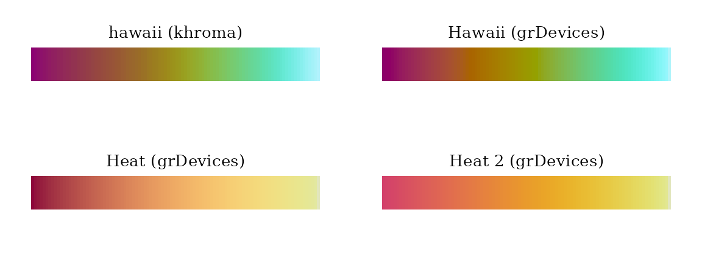
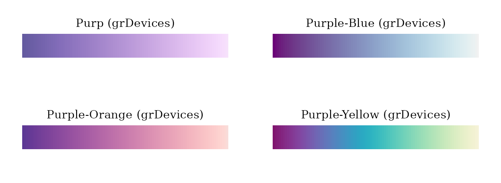
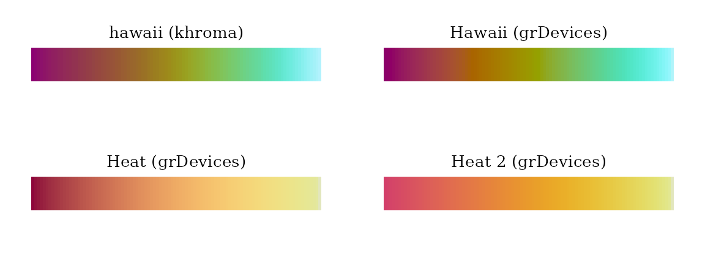
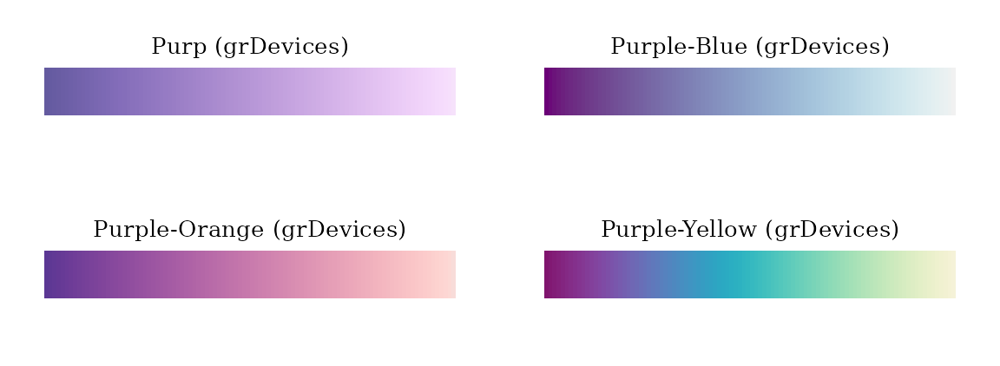

The “color.theme” object is designed as a container for two color
functions: palette() and ramp(). It can be
created by specifying a color theme name as the first argument of the
color.theme() function.
library(midr)
library(ggplot2)
library(gridExtra)
nightfall <- color.theme("nightfall")
print(nightfall)
#> Diverging Color Theme : "nightfall"
nightfall$palette(3)
#> [1] "#125A56" "#ECEADA" "#A01813"
#> attr(,"missing")
#> [1] "#FFFFFF"
nightfall$ramp(c(0.00, 0.25, 0.50, 0.75, 1.00))
#> [1] "#125955" "#76B7D2" "#EBEAD9" "#F89645" "#9F1813"
accent <- color.theme("Accent", pkg = "grDevices")
print(accent)
#> Qualitative Color Theme : "Accent"
accent$palette(5)
#> [1] "#7FC97F" "#BEAED4" "#FDC086" "#FFFF99" "#386CB0"
viridis <- color.theme("viridis")
print(viridis)
#> Sequential Color Theme : "viridis"
viridis$palette(3)
#> [1] "#440154FF" "#21908CFF" "#FDE725FF"
viridis$ramp(c(0.00, 0.25, 0.50, 0.75, 1.00))
#> [1] "#440053" "#3E5188" "#20908C" "#6AC661" "#FDE625"Alternatively, a new color theme can be created by passing a color vector.
divct <- color.theme(c("violetred", "white", "darkblue"), type = "diverging")
print(divct)
#> Diverging Color Theme
seqct <- color.theme(c("white", "steelblue", "darkblue", "violetred"))
print(seqct)
#> Sequential Color Theme
qualct <- color.theme(c("violetred", "steelblue", "gray50"), type = "qualitative")
print(qualct)
#> Qualitative Color ThemeThe color appearance of visualizations created with
midr can be easily customized by passing a
“color.theme” object or a color theme name implemented in
midr (see below) to ggmid() or
plot().
set.seed(42)
dataset <- diamonds[sample(nrow(diamonds), 5000L), ]
mid <- interpret(price ~ (carat + color + clarity + cut) ^ 2, dataset)
#> 'model' not passed: response variable in 'data' is used
grid.arrange(
ggmid(mid, "color:clarity", main.effect = TRUE),
ggmid(mid, "color:clarity", main.effect = TRUE, theme = divct),
ggmid(mid, "carat:color", main.effect = TRUE, theme = "viridis"),
ggmid(mid, "carat:color", main.effect = TRUE, theme = "viridis_r")
)
imp <- mid.importance(mid)
grid.arrange(
ggmid(imp, "heatmap"),
ggmid(imp, "barplot", max = 10, theme = qualct),
ggmid(imp, "heatmap", theme = seqct),
ggmid(imp, "barplot", max = 10, theme = "dark")
)
The functions scale_color_theme() and
scale_fill_theme() provide a pipeline for customizing
ggplot graphics.
p <- ggplot(dataset) + geom_point(aes(carat, price, col = color))
grid.arrange(
p + scale_color_theme("DALEX"),
p + scale_color_theme("discreterainbow"),
p + scale_color_theme("Okabe-Ito"),
p + scale_color_theme("plasma", discrete = TRUE)
)


 
